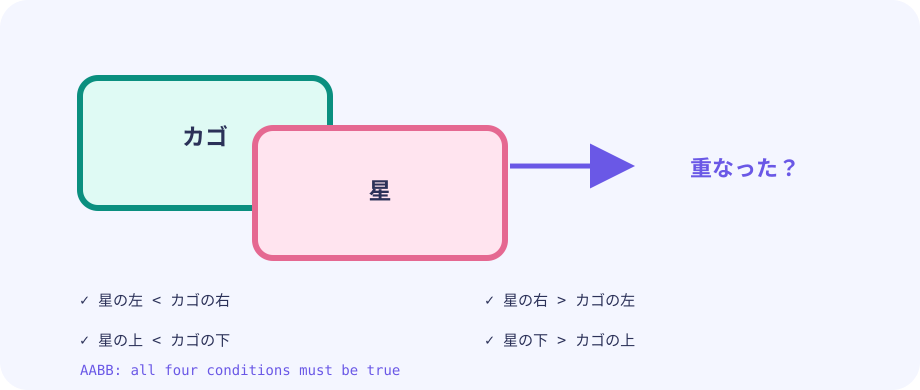

移動
星は毎フレーム Y に速さを足して落ちます。カゴはキーやポインタで X だけ動かします。
star.y += speed★★☆☆☆ / PLAYABLE
上から落ちる星を、主人公 海老・天次郎 が持つカゴで受け止めます。見た目はキャラとカゴ、当たり判定は見えない四角形です。星を3回落とすとゲームオーバーなので、取りこぼしに気をつけましょう。
見た目はオリジナル主人公の 海老・天次郎。当たり判定は図形のままです。動きの計算は LEVEL 01 の Update / Draw と同じ枠の中に書きます。
はじめて読む人へ
スライスは星を何個でも入れられる順番付きリスト。天次郎が星を受け止め、3個落とすとゲームオーバーです。
このページの1本
説明と次のコードを対応させてから、ゲームで変化を確かめよう。
stars = append(stars, newStar())見えない箱
見た目が丸い星でも、最初は四角い箱で十分です。カゴは左右に動かすゲームなのでXだけを変え、Yは落ち着いた高さに固定すると判定を考えやすくなります。
basket.xだけ変える


PLAYABLE / WEBASSEMBLY
矢印キー、WASD、ドラッグに対応。3回落とすとゲームオーバーです。
DEEP DIVE / MOVEMENT & BOX HITS
星もカゴも、見えない四角形だと考えます。2つの四角形が重なっていればキャッチ成功。むずかしい略語より、「箱どうしが重なったか」と覚えるだけで十分です。
星は毎フレーム Y に速さを足して落ちます。カゴはキーやポインタで X だけ動かします。
star.y += speed星は1個ではなくスライス（リスト）で持ちます。一定フレームごとに新しい星を追加します。
stars []star左右と上下、どちらも食い込んでいればヒット。1辺でも離れていたらはずれです。
overlaps(a, b)TRY IT / RECTANGLE OVERLAP
「1フレーム進める」で星が落ちます。カゴの四角形と重なった瞬間、判定が YES になります。
丸く見えても、当たり判定は四角形で十分なことがよくあります。まずは箱で考え、必要ならあとから精密にします。
TRY IT · GO
star.y += star.speed basket.x = clamp(pointerX) if overlaps(starBox, basketBox) { score++ }
—
THE OVERLAP RULE
左 < 相手の右 かつ 右 > 相手の左そして上 < 相手の下 かつ 下 > 相手の上たてとよこの両方が重なって初めてヒットです。どちらか一方だけ重なっても、すれ違いです。
IN THE REAL GAME
やっていることはシンプルです。星を1つずつ見て、キャッチした星と画面外に落ちた星をリストから外し、残す星だけを新しいリストに移すだけです。
g.stars[:0] の意味（読まなくても大丈夫）コードでは next := g.stars[:0] と書いていますが、これは「中身を捨てた新しいリスト」ではなく、同じ配列メモリを長さ0から再利用する書き方です。普通の var next []star でも同じ結果になりますが、毎フレームのメモリ確保を減らせます。
Y判定の 625〜675 はカゴ中心（だいたい Y=640）の上下に厚みを持たせた範囲です。カゴの見た目の高さに合わせた「つかみやすい帯」だと思ってください。
リトライの *g = *newGame() は、「ゲーム箱 g の中身を、新品の箱の中身で丸ごと入れ替え」です。ポインタ g 自体は同じまま、スコアや星リストなど全部が初期値に戻ります。
next := g.stars[:0] // 長さ0で再利用（var next []star でも可）
for _, s := range g.stars {
s.y += s.speed
if overlaps(s, g.basket) {
g.score++
continue // キャッチしたので残さない
}
if s.y > height {
g.lives--
continue
}
next = append(next, s)
}
g.stars = nextTODAY — まずここを見る
下のコードがこのゲームの本体です（主人公の絵は共有パッケージ internal/hero から読みます）。コピーして手元で開けます。その前に、上の「まずここを見る」3つだけ追ってください。
package main
import (
"fmt"
"image/color"
"math/rand"
"github.com/hajimehoshi/ebiten/v2"
"github.com/hajimehoshi/ebiten/v2/ebitenutil"
"github.com/hajimehoshi/ebiten/v2/vector"
"github.com/kumagi/EbiShowcase/internal/hero"
)
const (
screenWidth = 480
screenHeight = 720
basketY = 640
basketHalfW = 58
)
// 落ちてくる星 1つ
type star struct {
x, y float64
speed float64
}
type game struct {
basketX float64
stars []star
frame int
score int
lives int
gameOver bool
rng *rand.Rand
}
func newGame() *game {
return &game{
basketX: screenWidth / 2,
lives: 3,
rng: rand.New(rand.NewSource(19)),
}
}
func restartPressed() bool {
if ebiten.IsMouseButtonPressed(ebiten.MouseButtonLeft) {
return true
}
if len(ebiten.AppendTouchIDs(nil)) > 0 {
return true
}
return false
}
// キーボード・マウス・タッチでカゴを動かす
func (g *game) moveBasket() {
if ebiten.IsKeyPressed(ebiten.KeyArrowLeft) || ebiten.IsKeyPressed(ebiten.KeyA) {
g.basketX -= 5
}
if ebiten.IsKeyPressed(ebiten.KeyArrowRight) || ebiten.IsKeyPressed(ebiten.KeyD) {
g.basketX += 5
}
if ebiten.IsMouseButtonPressed(ebiten.MouseButtonLeft) {
x, _ := ebiten.CursorPosition()
g.basketX = float64(x)
}
if ids := ebiten.AppendTouchIDs(nil); len(ids) > 0 {
x, _ := ebiten.TouchPosition(ids[0])
g.basketX = float64(x)
}
// 画面の端から出ないようにする
if g.basketX < 55 {
g.basketX = 55
}
if g.basketX > screenWidth-55 {
g.basketX = screenWidth - 55
}
}
// 星がカゴに入ったか（AABB：四角どうしの重なり）
func (g *game) caught(s star) bool {
inY := s.y > 625 && s.y < 675
inX := s.x > g.basketX-basketHalfW && s.x < g.basketX+basketHalfW
return inY && inX
}
// --- ここから Update ---
func (g *game) Update() error {
if g.gameOver {
if restartPressed() {
*g = *newGame()
}
return nil
}
g.moveBasket()
g.frame++
// 45フレームごとに星を1つ出す
if g.frame%45 == 0 {
g.stars = append(g.stars, star{
x: 25 + g.rng.Float64()*(screenWidth-50),
y: -20,
speed: 2.6 + g.rng.Float64()*2,
})
}
// 残す星だけを next に集める
next := g.stars[:0]
for _, s := range g.stars {
s.y += s.speed
if g.caught(s) {
g.score++
continue // 取れたので消す
}
if s.y > screenHeight {
g.lives--
if g.lives <= 0 {
g.gameOver = true
}
continue // 落としたので消す
}
next = append(next, s)
}
g.stars = next
return nil
}
// --- ここから Draw ---
func (g *game) Draw(screen *ebiten.Image) {
screen.Fill(color.RGBA{7, 20, 38, 255})
// うすい星空
for i := 0; i < 24; i++ {
vector.DrawFilledCircle(
screen,
float32((i*97)%screenWidth),
float32((i*53+g.frame/4)%screenHeight),
1.5,
color.RGBA{45, 226, 194, 120},
false,
)
}
for _, s := range g.stars {
vector.DrawFilledCircle(screen, float32(s.x), float32(s.y), 15, color.RGBA{255, 210, 72, 255}, false)
vector.DrawFilledCircle(screen, float32(s.x-5), float32(s.y-5), 4, color.White, false)
}
vector.DrawFilledRect(screen, float32(g.basketX-basketHalfW), basketY, 116, 38, color.RGBA{45, 226, 194, 255}, false)
vector.DrawFilledRect(screen, float32(g.basketX-48), 630, 96, 12, color.RGBA{255, 105, 79, 255}, false)
// カゴを持つ主人公
hero.DrawBottomCentered(screen, g.basketX, basketY+8, 56)
ebitenutil.DebugPrintAt(screen, fmt.Sprintf("SCORE %02d LIVES %d", g.score, g.lives), 170, 25)
if g.gameOver {
ebitenutil.DebugPrintAt(screen, "GAME OVER\n\nCLICK / TOUCH TO RETRY", 155, 320)
} else {
ebitenutil.DebugPrintAt(screen, "MOVE: ARROWS / DRAG", 170, 690)
}
}
func (g *game) Layout(_, _ int) (int, int) {
return screenWidth, screenHeight
}
func main() {
ebiten.SetWindowSize(screenWidth, screenHeight)
ebiten.SetWindowTitle("Catch the Stars — Ebitengine")
if err := ebiten.RunGame(newGame()); err != nil {
panic(err)
}
}
WITHOUT LISTS
変数を星の数だけ用意すると、すぐに限界が来ます。リストなら何個でも同じルールで動けます。
WITH BOX HITS
絵がきれいでなくても、四角形の重なりさえ正しければ「キャッチした感じ」は出せます。
YOUR FIRST TUNING
星の speed や出現間隔 frame%45 を変えると難易度が変わります。カゴの幅を広げるのもやさしい調整です。
このゲームの星は、決めた speed のまま一定の速さで落ちます。次のレベルでは、速さを毎フレーム変える「加速度」を加え、上昇から落下へ切り替わるジャンプの弧を作ります。
FEEDBACK